RoboHelp Introduction
Context: Onboarding for junior writers.
Purpose: Allow the writers to start using RoboHelp.
Audience: Juniors with no prior knowledge of help authoring tools.
What is RoboHelp?¶
RoboHelp is a help authoring tool used to generate output in various formats from one source (this is called single sourcing).
In this company we generate WebHelp, Responsive Help, and Word (transformed to PDF for final delivery). This tutorial will refer primarily to WebHelp, as that is the main deliverable.
Getting Started¶
To start working with RoboHelp, you need to either open an existing project or create a new one.
Note
In this company, we work mostly with existing projects.
You can open or create a project from the Starter screen or from the File menu.
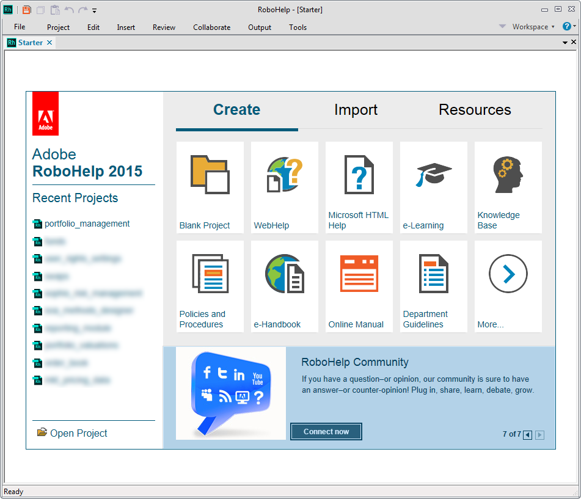
About RH Projects¶
A basic RoboHelp project - defined as a project that can be used to generate a delivery-ready output - should at least contain the following:
- Topics - the HTML files drafted by the technical writers.
- Table of contents - a structure for these topics
- Single source layout (SSL) - the settings used to generate the output
A basic workflow for generating a deliverable (output) is:
- Draft the topics.
- Organize them into a table of contents.
- Define the output preferences in an SSL.
- Generate the output.
This output can then be published (copied) to a website, an internal shared drive, etc.
About the Interface¶
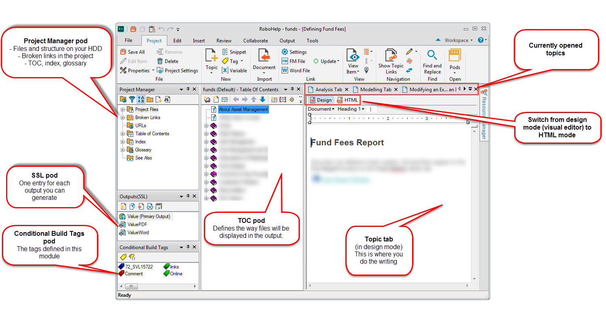
The image above explains the most commonly used components.
Other features that are commonly used are:
- Conditional build tags - "labels" that can be applied to text or images and allow you to selectively output content based on an expression.
- Variables - small fragments of text that can be defined once and reused throughout the project; variables can be part of a variable set.
- Snippets - larger fragments of text that can be defined once and reused throughout the project.
Topics¶
Creating a Topic¶
Topics are HTML pages that make up the online help system - topics are essentially our documentation. You can create topics starting from the Project Manager pod or the TOC - the differences are described in the table below.
| Action | Screenshot | Result |
|---|---|---|
| Right-click a folder in the Project Manager and select New > Topic. !!! quote "Recommended Way" This is the recommended way. |
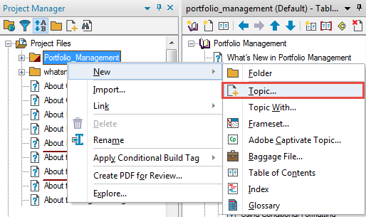 |
The topic is created in the folder you selected. 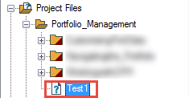 |
| Right-click a book in the TOC and select New > Topic. | 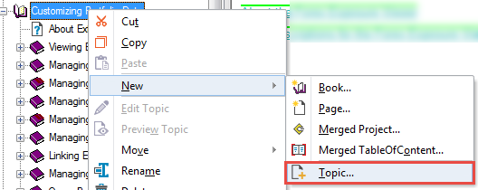 |
The topic is created in the root folder. 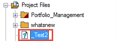 |
When you create a new topic, you need to fill in the details in the New Topic window. You generally only need to write the Topic Title. This name will be automatically added as a Heading 1 at the top of the topic, and it will also be displayed in the Project Manager.
The File Name is the name under which the topic is saved to your HDD and it is created automatically from your topic title. These two names do not have to be identical, but it is good practice to use the same name in both fields.
File Naming Convention
Do not use any special characters (&, –, —, (, ) etc) in the File Name field. The Topic Title can use them, but make sure you replace them with _ in the File Name if RoboHelp does not do it automatically.
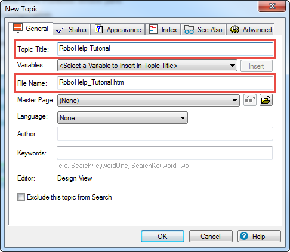
Editing Topic Properties¶
After you have created a topic, you can change its properties by right-clicking it in the Project Manager. This opens a window identical to the New Topic window.
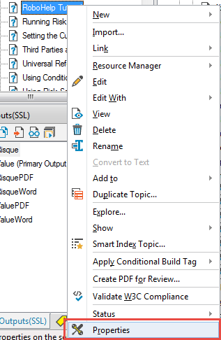
Deleting a Topic¶
To delete a topic, right-click it in the Project Manager and select Delete.
Warning: Deleting Topics
Never delete a topic unless you are sure it is not referenced in other topics or the TOC!
To check topic links, right-click the topic (in the Project Manager or TOC) and select Show > Topic Links. This displays the topics that link to the current topic and the topics that the current topics links to.
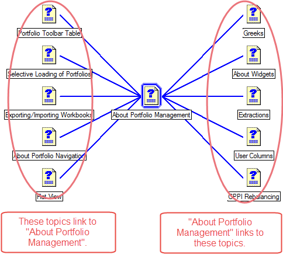
To check topic references, right-click the topic (in the Project Manager or TOC) and select Show > Topic References. This displays all the above links, plus the references in the TOC or Index.
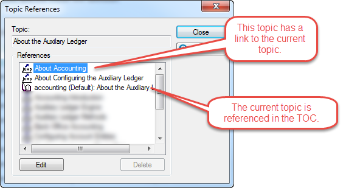
Adding a Topic to the TOC¶
To add a topic to the table of contents, simply drag it from the Project Manager into the TOC pod.
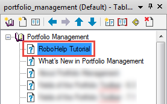
Adding Content to a Topic¶
You can edit topics in Design Mode or in HTML Mode.
| Mode | Screenshot |
|---|---|
| Design Mode offers a WYSIWYG editor that uses common formatting shortcuts (CTRL + B, etc) | 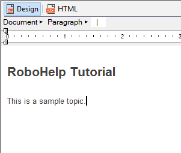 |
| HTML Mode lets you edit the source of the file directly. | 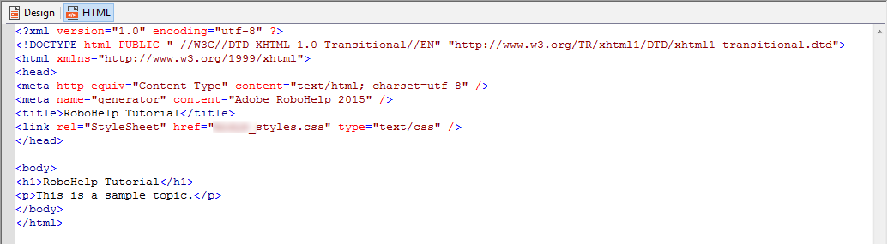 |
Each topic has to be associated with a stylesheet that is defined at the project level. If your new topic does not pick up the correct stylesheet automatically, you can add it yourself from the Edit ribbon tab.
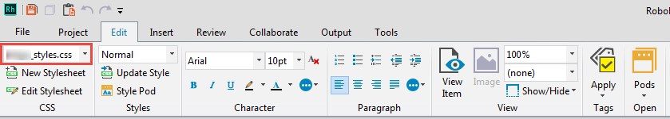
Formatting Content¶
Most formatting commands can be found on the Edit ribbon tab.
Formatting Rules
Never use inline formatting except for bold, italic, bullets and numbering. All other formatting needs to be applied using one of the styles that are predefined in the CSS.
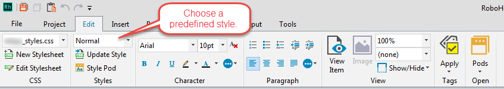
Never paste content from Word or from other applications that include text formatting! If you need to paste text, pass it through Notepad or similar first. You can also download the free utility PureText.
Dropdowns¶
Dropdowns are RoboHelp-specific elements that allow you to "hide" content until you click the dropdown.
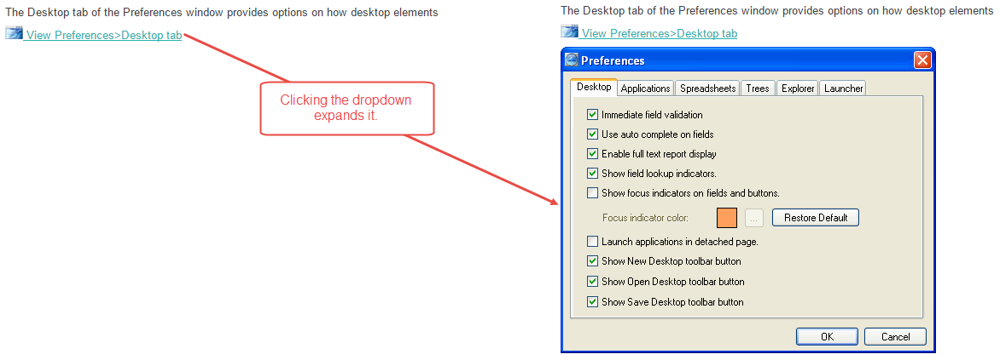
To insert a drop down, follow these steps:
- Write the text that you will apply the dropdown effect to.
- Select the text.
- On the Insert tab, click DropDown text. The Dropdown text editor opens.
- Enter your text or image.
- Click outside the dropdown editor to close it and save the changes.
Expanding Text
RoboHelp also offers Expanding Text. The principle is the same, except that the image or text is displayed to the left of the "link", on the same line. We do not use these in our documentation.
Table of Contents¶
The table of contents defines the structure of the content (the way it is displayed in the online help output). The TOC is structured into books and pages. Each page is essentially a link to a topic that exists in the project.
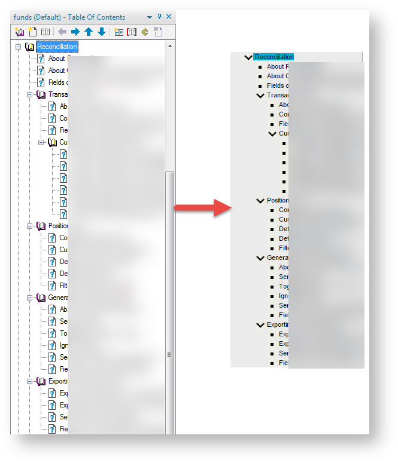
Topic Properties¶
You can edit the properties of a topic (though you usually don't need to) by right-clicking it and selecting Properties.
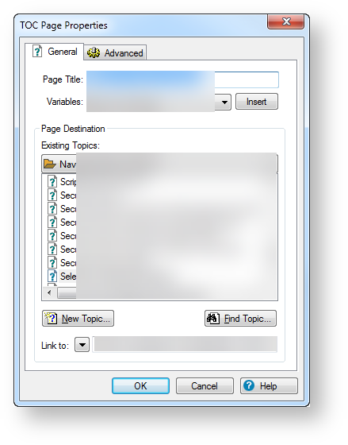
- The Page Title indicates the text that is displayed in the TOC of the generated online help.
- The Page Destination section allows you to change the destination of the page (but you generally shouldn't do this).
- The Link to field shows the location of the destination file on the disk.
Book Properties¶
The properties for a book are similar:
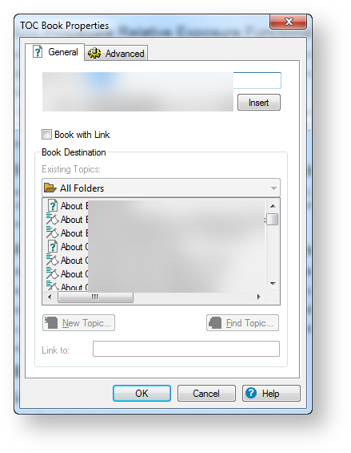
The Book with Link setting indicates what happens when you click a book in the generated output:
- If the book is not linked to a topic, clicking it simply expands the next level. This is the recommended setting.
- If the book is linked to a topic, clicking it opens that topic and also expands the next level.
Layouts¶
Single source layouts (SSLs) allow you to generate various types of output starting from a single source. In this company, we mostly use WebHelp, Printed Documentation, and Responsive Help.
SSLs are managed in the Outputs (SSL) pod.
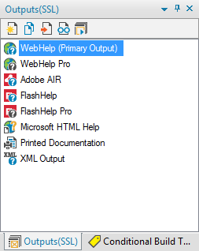
You can rename your outputs or keep the default names (but this is usually standardized at the product team level, so don't go changing things without asking first).
The buttons at the top of the pod let you perform various actions like creating a new layout or duplicating an existing one.
Generating Output¶
To generate an output, simply double-click the respective layout and follow the steps of the wizard.
Standardized Settings
The settings are usually standardized at the product team level and should be already saved in the SSL.
Conditional Build Tags¶
Conditional build tags (CBT) are RoboHelp-specific code snippets that allow you to customize one set of source files for multiple audiences or purposes. For example, if you are writing a new topic, but you haven't finished yet, you can use a conditional build tag to make sure that the incomplete content is not published by mistake.
You can apply CBT to:
- Text
- Topics in the Project Manager
- Pages in the TOC
CBT Application Rules
If you want to hide a topic from the output, you need to apply the conditional build tag in the Project Manager. When you do this, the topic is also hidden from the TOC when the module is generated (but it's still a good idea to also apply the tag to the corresponding TOC page, to make it obvious that the topic is hidden).
If you apply a tag to the TOC page only, the topic is still generated and can be found via search (and we don't want that).
Baggage Files
You can not apply CBT to baggage files.
Applying Conditional Build Tags¶
To apply a tag to an element, simply select it, right-click, select Apply Conditional Build Tag, then choose an existing tag or create a new one.
You can also drag the tags from the Conditional Build Tags pod to the selected text or to a topic/page.
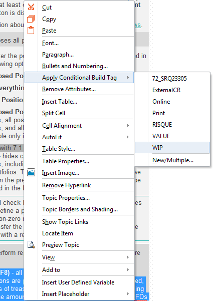
Previewing Conditionalized Text¶
If you want to see what your output would look like if you excluded a specific conditional build tag, you can preview the topic by clicking View Item on the Project ribbon tab and then changing the Conditional Build Tag Expression.
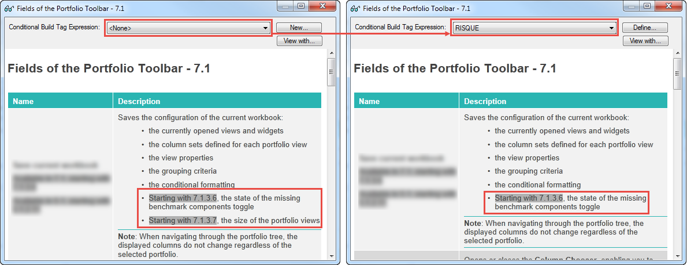
Conditional Expressions¶
When generating an output for a RoboHelp project, conditional build tags are grouped into expressions to indicate what parts of the content should be published.
Removing Conditional Build Tags¶
To remove a conditional build tag from an element, select the element, right-click it, select Apply Conditional Build Tag, then click the applied conditional build tag to remove it.
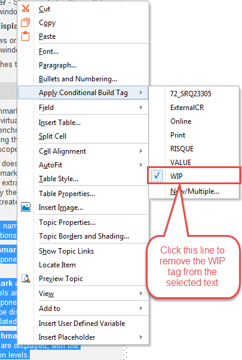
Managing Conditional Build Tags¶
CBT are managed in the Conditional Build Tags pod.
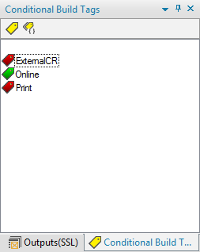
In this pod, you can create and delete tags, and view tag properties. All these options are available in the context menu.
Deleting CBT
If you delete a conditional build tag, it is removed from all the places it had been applied, therefore you must be careful - never delete a tag before checking if it is in use! To do this, right-click the tag and select Properties.
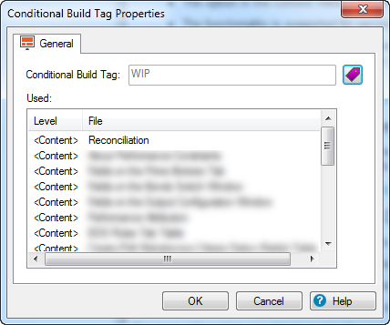
Example - Printed Documentation¶
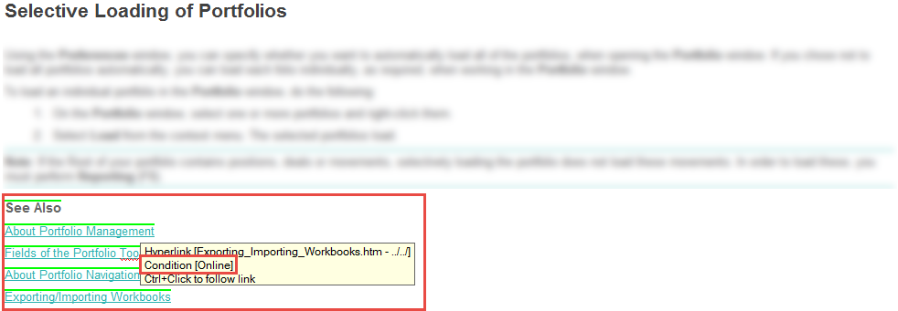
In this topic, we have tagged the links in the topic with the Online CBT. This way, we can leave the links visible in the WebHelp output, but we can hide them from the PDF output.
Variables¶
In RoboHelp, variables are small bits of text that are defined once and can be reused throughout the module. You can define simple variables or variable sets. Variable sets are collections of variables that have a different value for each variable set.
Variable example: product name. If you inserted the product name as a variable and the product name changes, you only need to update the variable and the product name is changed everywhere.
Variable set example: product versions. Our two applications have different versioning, but the help is generated from the same source. We use two variable sets: one for the first application (versioning: 4.3.2, 4.3.3, 5.1.2) and one for second one (6.3.2, 6.3.3, 7.1.2). By choosing the appropriate variable set in the SSL, the versions in the outputs are different between the two.
Defining Variables¶
Variables and variable sets are defined in the User Defined Variables pod.
Creating a Variable¶
- In the User Defined Variables pod, click Create a New User Defined Variable. The New Variable window is displayed.
- Enter a Variable Name. This is used for identification purposes and is not displayed in the output, for example,
Product_Name. - Enter a Variable Value. This is the text that is displayed in the output, for example,
KaTet. - Click OK. The new variable is displayed in the pod.
Creating a Variable Set¶
- In the User Defined Variables pod, click Add/Edit/Delete Variable Set. The Variable Set window is displayed.
- Click Add. A new row is added.
- Enter a name for the set and click OK. You cannot edit or delete the Default Variable Set.
Defining Variable Values in Sets¶
- Define a variable in the usual way.
- Double-click the variable. The User Defined Variable Properties window is displayed. The variable value you entered is assigned by default to all variable sets.
- Under Variable Set, choose a set and change the value of the variable accordingly. Repeat until the variable is defined correctly for all sets.
- Click OK.
Inserting Variables¶
Variables can be used in topic content, topic titles, and the TOC.
Variables in Topic Content¶
To insert a variable in a topic, drag the variable from the User Defined Variables pod to the desired place in the topic.
Default Variable Set
If you are using variable sets, the values for the Default Variable Set are displayed in the topics.
Variables in Titles¶
To insert a variable in a topic title or TOC entry:
- Right-click the topic, TOC book or TOC page and select Properties. The Properties window for the respective type of element is displayed.
- Position the cursor at the point where you want to add the variable.
- In the Variables drop-down, select the required variable.
- Click Insert. The variable is added.
Generating Output with Variables¶
If you are not using variable sets, you do not need to do anything extra in the SSL.
If you are using variable sets, make sure you select the correct one in the SSL.
Deleting Variables¶
To delete a variable, select it in the User Defined Variables pod and click Delete. The following options are displayed:
- Delete variable and its reference - completely removes the variable from the module. For example, if you had a variable called KaTet and a line that said "
is a Deschain product" , choosing this option would leave " is a Deschain product". - Delete only the variable - deletes the variable from the pod, but leaves references to the variable in the HTML of the respective topics. In the above example, the text would become ERROR: Variable (KaTet) is undefined is a Deschain product.
- Delete variable and replace with actual content - deletes the variable, but replaces it with the variable value (static text) in the topics.
Checking Variable Usage
In general, you should not delete variables unless you are sure that they are not used anywhere. To check if a variable is used or not, look at the Used in Topics section in its Properties window.
Single Projects¶
To create a new RoboHelp project:
- Open RoboHelp 2015 and click Blank Project.
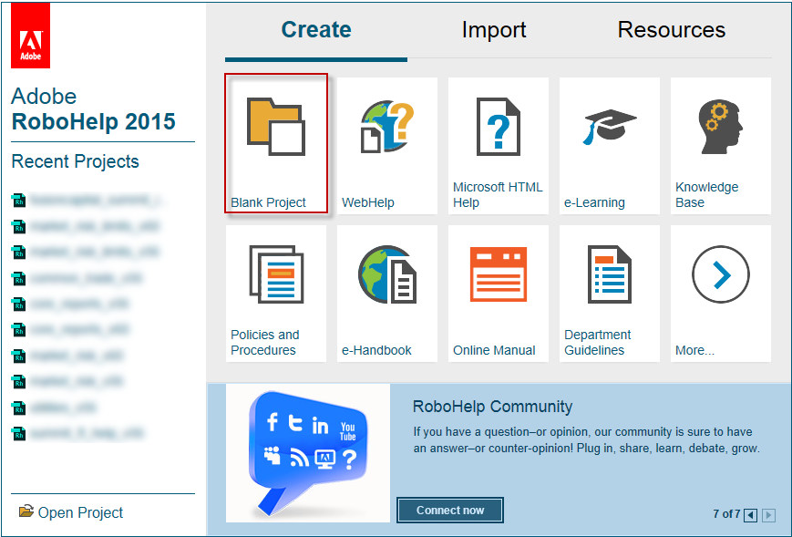
- On the New Project Wizard window, enter the title, file name and location of the new project to be created.
- Click Finish.
- Copy the CSS file from one of the existing RH projects.
- Open the folder where you created the new RH project and paste the CSS file.
- Press CTRL+S to save all the changes. You can now delete the First Topic page and create the pages you need in the Project Manager pane.
Merged Projects¶
In this company, the most common use of the merged projects functionality is the so-called "master project" of the online help system. The main advantage is that, instead of having one large RoboHelp project for the entire help (which would be unwieldy and would probably crash RoboHelp), we can split the documentation by module and simply assemble the modules into one TOC using the master.
Merged projects are added and organized using the Table of Contents pod, just like any topic. You can use merged projects, books and topics together in the same TOC. You can also use merged projects inside other merged projects.
The screenshot below is an example of a master project that contains 4 topics and several merged projects.
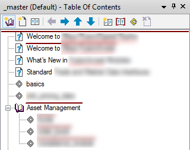
Creating Merged Projects¶
To add a new merged project:
- In the Table of Contents pod, click New Merged Project. The Merged Project window is displayed.
- On the FlashHelp/WebHelp/Multiscreen/Adobe AIR tab, type the name of the project you want to link (the name of the .xpj of that project). You can also browse for the location of the .xpj, but it is not required.
- Click OK. The merged project is added in the TOC with a specific icon.
Merged Projects Structure¶
If you have a project defined with merged projects, the following structure is generated when you build WebHelp:
- all the usual files in the project
- a
mergedProjectsfolder in the root of the project. - inside the
mergedProjectsfolder, a sub-folder for each merged (child) project, with the name defined in the TOC -
inside each sub-folder, two files:
MasterData_xml.jsreadme.txt
Merged TOC
If you use the Show Merged TOC in Child Project option in the WebHelp SSL, you should not delete these files, as the Show link won't work correctly anymore.
This diagram shows the structure of a master with empty child projects.
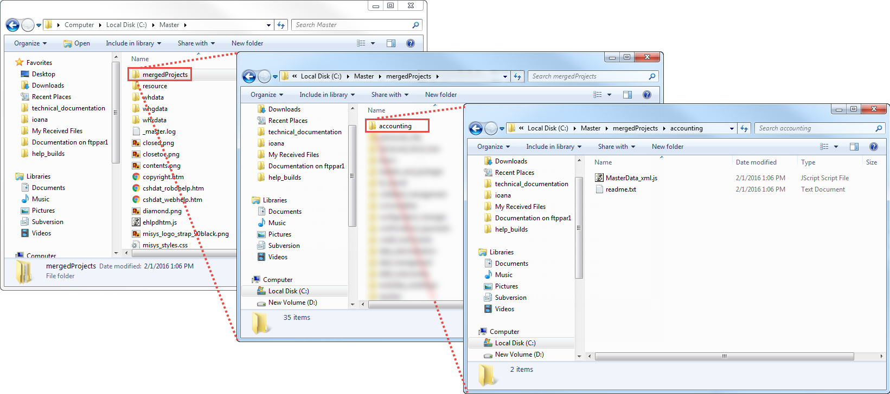